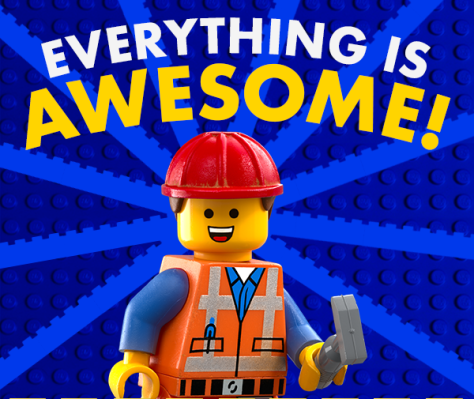
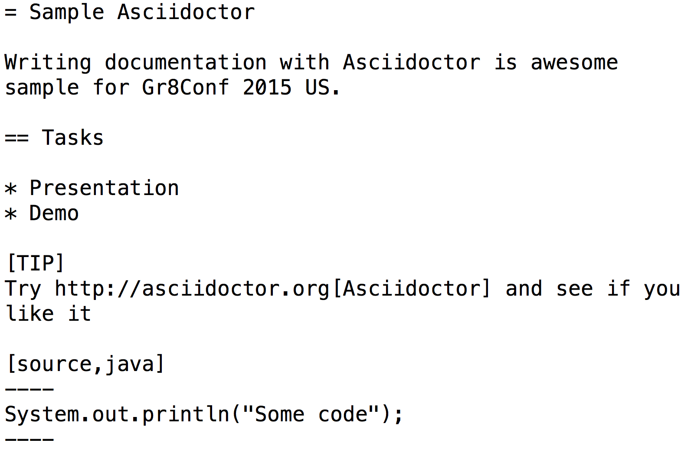
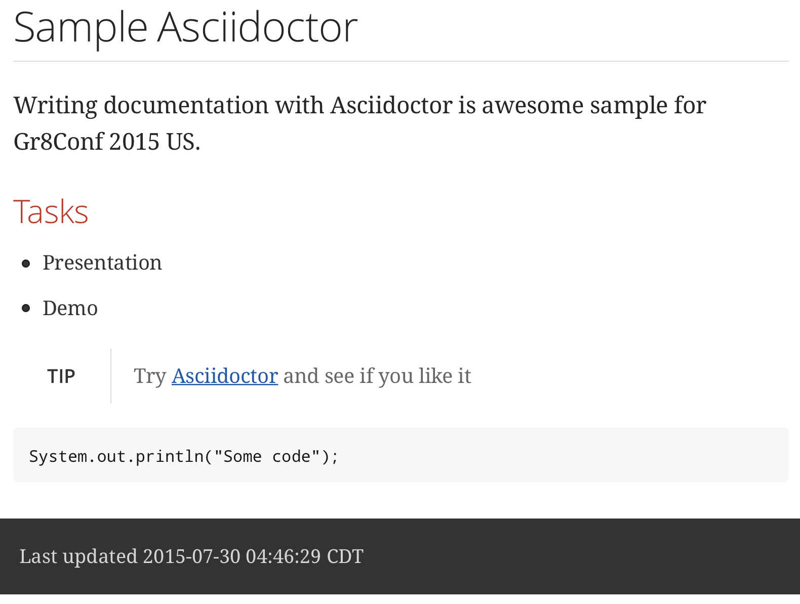

['Hubert', 'Alexander', 'Klein', 'Ikkink']
.inject { alias, name ->
alias + name[0].toLowerCase()
} == 'mrhaki'
['Hubert', 'Alexander', 'Klein', 'Ikkink']
.inject { alias, name ->
alias + name[0].toLowerCase()
} == 'mrhaki'Hubert Klein Ikkink, aka mrhaki
Live in The Netherlands
Work at JDriven as software developer/consultant
Messages from mrhaki at http://mrhaki.blogspot.com
Groovy, Grails, Gradle, Spock, Asciidoctor
Twitter @mrhaki
Awesome Asciidoctor Notebook (free)
Developers do not like writing documentation
Different tools
Different formats


Better Asciidoc
Written in Ruby
Built-in templates for HTML5 and Docbook
Support document attributes
Include external files
Extensions
Command line
AsciidoctorJ(ava)
Gradle
Maven
Asciidoctor.js
Browser plugins
Spring
Groovy, Golo and Ceylon languages
Arquillian, Weld and other JBoss sites
Book publishers